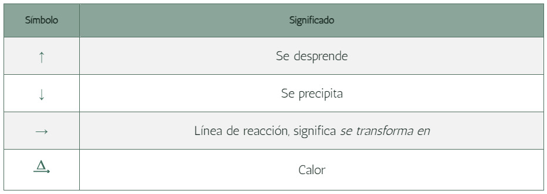

¿Qué son las reacciones químicas?
Las reacciones químicas son procesos en los cuales una o más sustancias químicas, llamadas reactantes, se transforman en una o más sustancias diferentes, conocidas como productos. En estas reacciones, los enlaces químicos entre los átomos se rompen y se forman nuevos enlaces, lo que conlleva un cambio en la estructura molecular y, por lo tanto, en las propiedades de las sustancias involucradas.
Las reacciones químicas son fundamentales en la química y en la ciencia en general, ya que explican cómo ocurren las transformaciones de la materia en el nivel molecular y cómo se producen fenómenos químicos y físicos en nuestro entorno. Estas reacciones pueden ser provocadas por diversos factores, como el calor, la luz, la presión, la concentración de sustancias, entre otros.
Algunos ejemplos cotidianos de reacciones químicas incluyen la combustión de un combustible como la gasolina en un motor de automóvil, la oxidación del hierro para formar óxido de hierro (el proceso de corrosión), la fotosíntesis en las plantas (que convierte la luz solar en energía química), y muchas otras reacciones que ocurren en laboratorios, industrias y procesos naturales.
Los símbolos más utilizados en una ecuación química son:

Partes de una reacción química

Tipos de reacciones químicas
- Reacciones de síntesis (o combinación): En estas reacciones, dos o más sustancias se combinan para formar una nueva sustancia. Por ejemplo, la síntesis del agua (2H₂ + O₂ → 2H₂O).
- Reacciones de descomposición: En este tipo, una sustancia se descompone en dos o más sustancias más simples. Un ejemplo es la descomposición del peróxido de hidrógeno (2H₂O₂ → 2H₂O + O₂).
- Reacciones de sustitución simple: En estas reacciones, un elemento reemplaza a otro en un compuesto. Por ejemplo, la reacción de desplazamiento simple del zinc con ácido clorhídrico (Zn + 2HCl → ZnCl₂ + H₂).
- Reacciones de doble sustitución: En este tipo de reacciones, los cationes y aniones de dos compuestos diferentes se intercambian. Por ejemplo, la reacción entre cloruro de sodio y nitrato de plata (NaCl + AgNO₃ → AgCl + NaNO₃).
También, puedes mirar el siguiente ejemplo:

Reacciones endotérmicas y exotérmicas
Reacciones endotérmicas: Las reacciones endotérmicas son procesos químicos en los cuales la energía se absorbe del entorno, lo que resulta en un aumento de la energía interna del sistema. En estas reacciones, los productos tienen una mayor energía interna que los reactantes. Como resultado, el entorno se enfría y la temperatura disminuye.
Un ejemplo clásico de una reacción endotérmica es la fotosíntesis, en la cual las plantas absorben la energía de la luz solar para convertirla en energía química almacenada en forma de glucosa y oxígeno.
Reacciones exotérmicas:
Las reacciones exotérmicas son procesos químicos en los que se libera energía en forma de calor hacia el entorno. En estas reacciones, la energía interna de los productos es menor que la de los reactantes. Como resultado, la temperatura del sistema aumenta y se siente un aumento de calor.
Un ejemplo común de una reacción exotérmica es la combustión. Cuando se quema el gas natural en una estufa, se libera calor hacia el entorno.